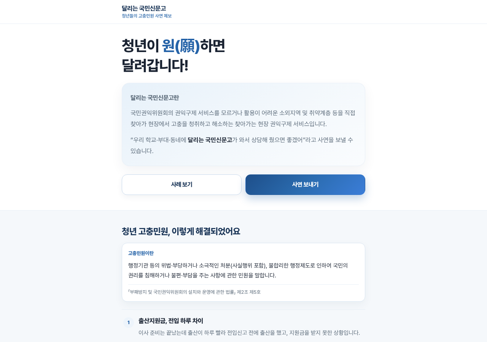
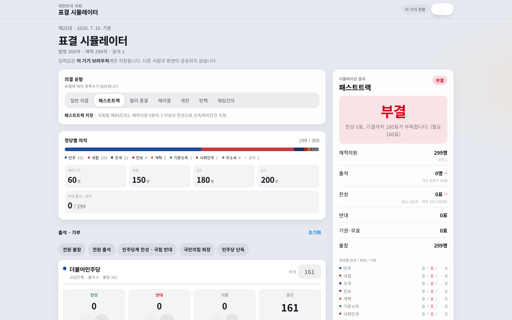
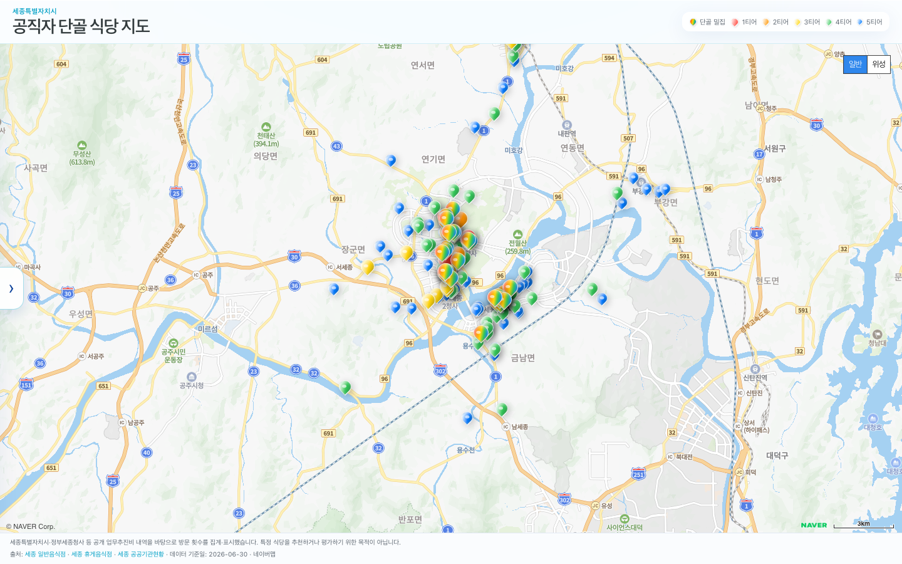

01웹
고충민원 의결서 초안
신청원인, 피신청기관의 주장, 사실관계를 넣으면 초안이 나옵니다.
AI 혁신리더 성과 발표
일하면서 만든 다섯 가지 도구를 소개합니다.



1
오늘 꺼내 놓을 것들
후임자를 위해 만든 프로그램부터, 애정 있는 업무를 위해 만든 웹서비스까지…
신청원인, 피신청기관의 주장, 사실관계를 넣으면 초안이 나옵니다.
청년이 원하는 곳으로 달려갈 수 있습니다.
패스트트랙 등 가결, 부결을 바로 계산합니다.
클릭 한 번으로 시트별 암호화 저장 기능을 프로그램으로 만들었습니다.
업무추진비를 기반으로 공직자들의 단골 맛집을 찾아봤습니다.
결정은 사람이 합니다. 도구는 앞자리 손질만 맡습니다.
2
고충민원 의결서 초안 생성기
텍스트, 이미지, PDF를 넣으면 초안이 작성됩니다. 민원 정보는 저장하지 않습니다.
3
달리는 국민신문고
사연을 받아서 찾아가고, 현장에서 소통합니다.
4
국회 표결 시뮬레이터
제22대 국회 의석과 출석·찬반을 넣으면 의결 유형별 결과가 나옵니다.
5
엑셀 자동 분리기
인트라넷 자유게시판에 프로그램으로 만들어 올렸습니다.
6
세종 공직자 단골 식당 지도
공개된 업무추진비 내역의 방문 횟수를 모아 지도 위에 얹었습니다.
7
모두가 할 수 있도록 AI혁신리더가 리드하겠습니다.
8
도구
장 고르기 · Esc로 닫기
예시 시연
신설도로에 의한 주거환경 피해 구제 요구